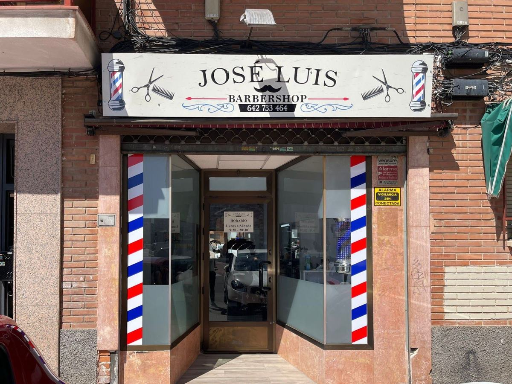
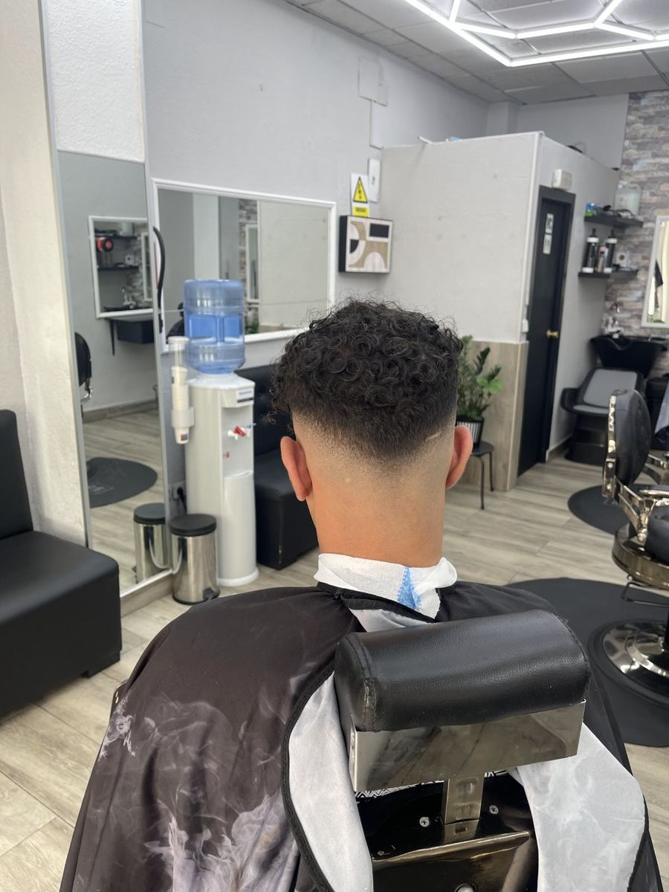
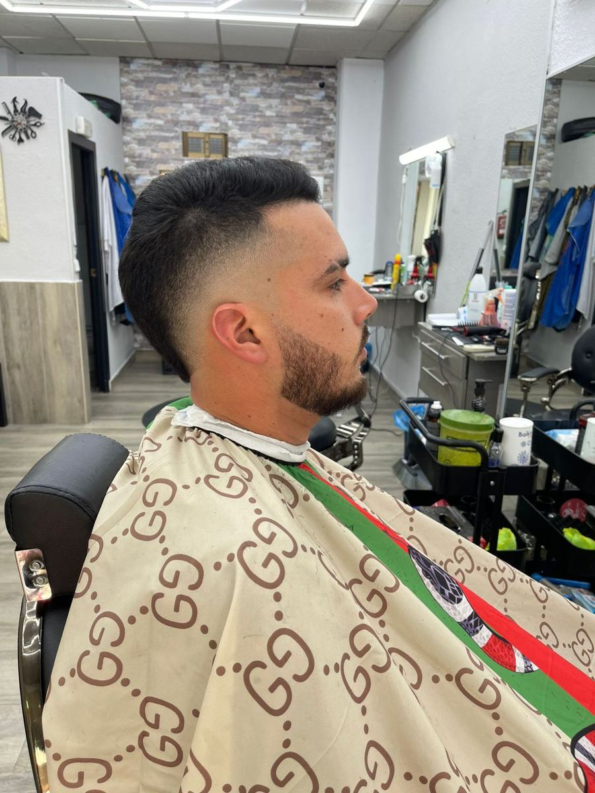
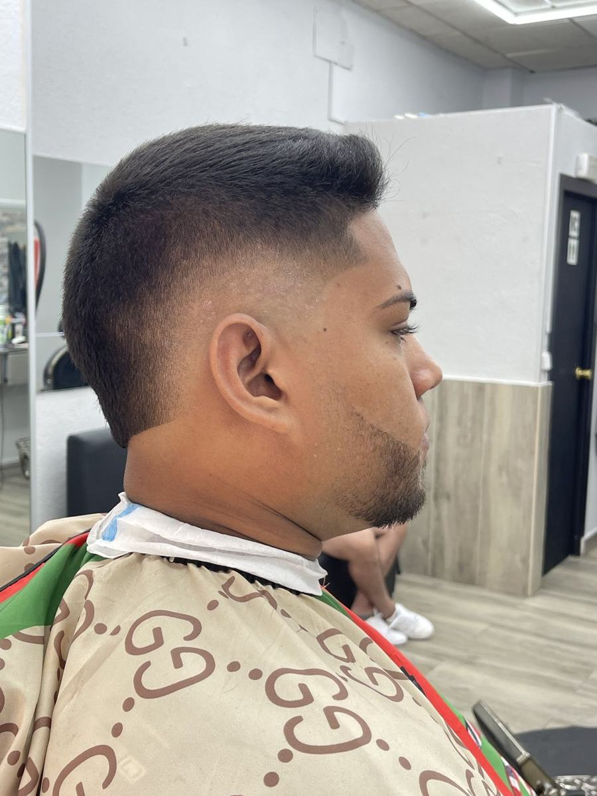
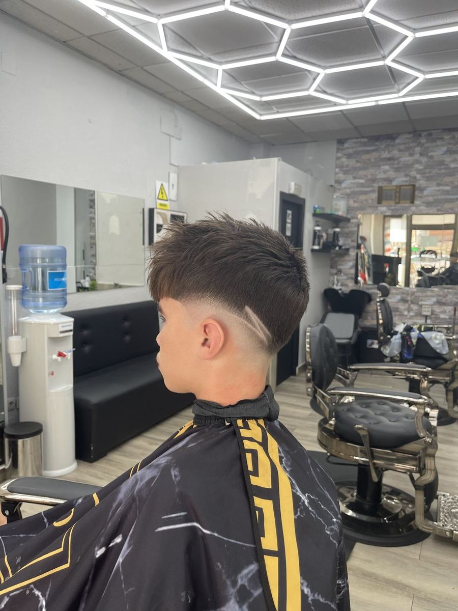
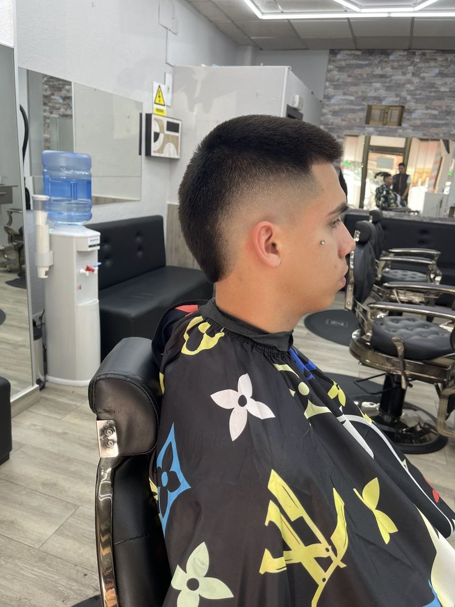

Barbershop · Alcalá de Henares
De lunes a sábado en la calle Luis de Medina, 10. Ven cuando te venga bien: a primera hora, a la hora de comer o al salir del trabajo.
Pedir cita por WhatsApp4,9 · 106 reseñas en Google




| Lunes | 9:30–20:30 |
|---|---|
| Martes | 9:30–20:30 |
| Miércoles | 9:30–20:30 |
| Jueves | 9:30–20:30 |
| Viernes | 9:30–20:30 |
| Sábado | 9:30–20:30 |
| Domingo | Cerrado |